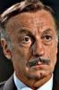

Country:United States, 70 minutes
Spoken languages:
Genres:Action, Adventure, Sci-Fi
Director(s):H. Bruce Humberstone, Charles F. Haas, Sandy Howard
Writer(s):Frederick Schlick, Robert Leach
Video Codec:Unknown
Number: 1617


Certification:G
Storyline:
Tarzan goes up against a villian by the name of Schroeder, who is trapping animals and selling them illegally to zoos. A twist is thrown into the plot when Schroeder's brother, with the help of money-hungry trader Lapin, hunts a different kind of quarry, human game. Now Tarzan must not only fight to save the animals of the jungle, but he must also save himself.
Cast: 


Medium: Original DVD,
Comments: Part of: Wrath of the Sword - 20 movie collection
Loaned: No
Aspect ratio: Unknown